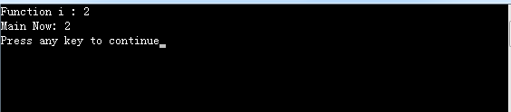

C语言使用return关键字返回函数值，可以很好对函数做封装，此处的疑问是：函数内部创建的变量都是局部变量，即私有的，作用域就在函数之内，为什么却可以把值传给调用函数？
解释这个问题还需要从C语言调用函数传参类比来说，C语言传参调用时，可以采用传值和传指针两种方式。
传值的形式：只是将参数值的拷贝传给函数，并非参数本体，如：
1 int test_func(int i)
2 {
3 i++;
4 printf("Function i : %d\n", i);
5 return 0;
6 }
7
8 int main()
9 {
10 int a = 10;
11 printf("Main Pre: %d\n", a);
12 test_func(a);
13 printf("Main Now: %d\n", a);
14
15 return 0;
16 }传指针形式：直接传给函数的是变量的地址，由于被调函数在参数指针的作用域之内，此时直接改变变量的本体。
1 int test_func(int *i)
2 {
3 (*i)++; //注意：++的优先级比*高
4 printf("Function i : %d\n", *i);
5 return 0;
6 }
7
8 int main()
9 {
10 int a = 10;
11 printf("Main Pre: %d\n", a);
12 test_func(&a);
13 printf("Main Now: %d\n", a);
14
15 return 0;
16 }同理，函数返回也有两种形式。
1、函数返回变量值
此时，返回变量值的方式与函数调用传值同样的道理，在函数结束返回时，将局部变量值拷贝给一个临时变量，然后将这个临时变量返回给调用函数。因此，即使局部变量在返回时已经释放内存，也不影响返回的变量值。
1 int test_func()
2 {
3 int i = 2;
4 printf("Function i : %d\n", i);
5 return i;
6 }
7
8 int main()
9 {
10 int a = 0;
11 a = test_func();
12 printf("Main Now: %d\n", a);
13
14 return 0;
15 }
从汇编的角度来看源代码：
由以上看出：返回变量值的时候，直接将局部变量的值传给了了寄存器eax，也就是说，函数返回以后，虽然局部变量已被释放，但是eax里面的还有一个值的拷贝。
2、函数返回地址
此时注意：C语言的指针操作，大部分都是直接对指针指向的变量直接操作，函数内部的变量和指针一般分配在栈上，而栈上的数据都是临时保存的，当函数返回时会自动释放掉，因此如果直接返回一个栈上的指针，返回的值将不可预知。
1 int *test_func()
2 {
3 int local_data = 10;
4
5 printf("Function local_data : %d\n", local_data);
6
7 return &local_data;
8 }
9
10 int main()
11 {
12 int *main_data = NULL;
13
14 main_data = test_func();
15
16 printf("Return data: %d\n", *main_data);
17
18 return 0;
19 }从汇编语言角度查看源码：
由以上看出：返回指针的时候，用的是指令lea，这条指令的作用是，将[ebp-4]（此单元对应的是变量local_data在栈上的数据存储位置）这个数据单元的地址传给eax寄存器，但是像这样在栈上开辟出来临时存储数据的单元，只要调用函数结束，就会释放掉里面的数据，因此虽然返回了一个指针，指针指向的数据却已经被系统销毁了，这就导致返回的指针指向不可预知的数据。